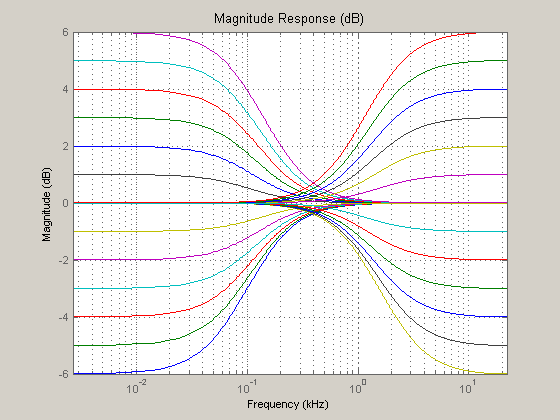
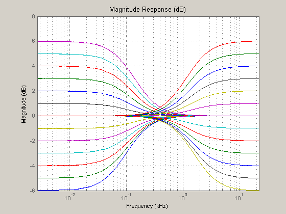
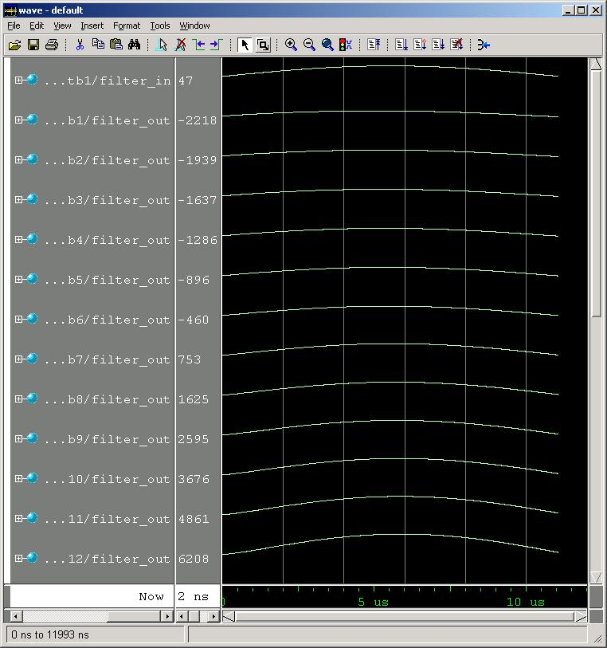
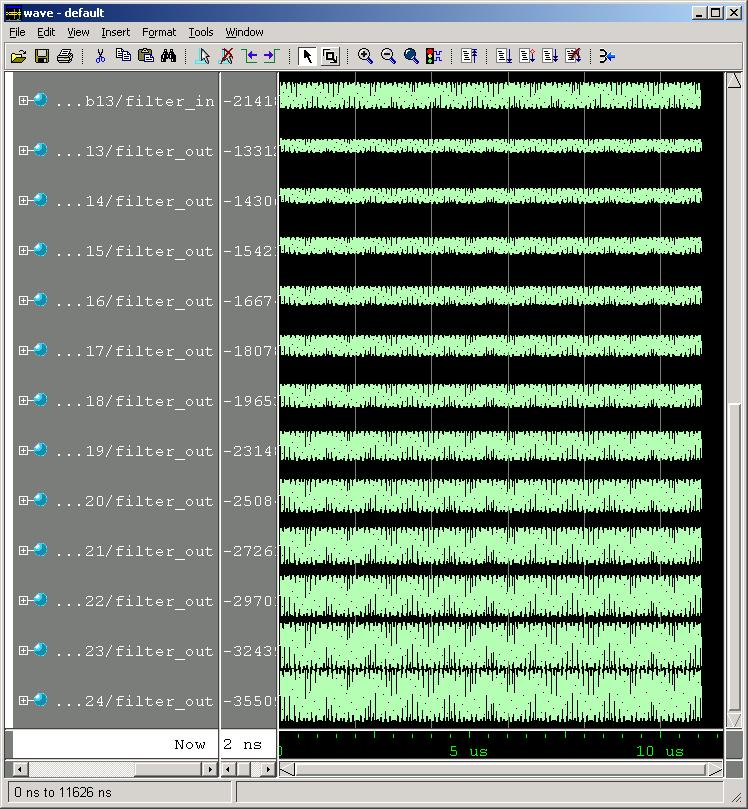

This demonstration illustrates how to generate HDL code for bank of 24 first-order shelving filters that implement an audio tone control with 1 dB steps from -6 dB to +6 dB for bass and treble.
The filters are analytically designed using a simple formula for a first-order filter with one pole and one zero on the real axis.
A filter bank is designed since changing the filter coefficients on-the-fly can lead to transients in the audio (clicks and pops) as the boost/cut control is moved. With a bank of filters running continuously, the appropriate filter is selected from the bank of filters when the output is near any zero crossing to avoid these transients.
Use the CD sampling rate of 44.1 kHz with bass and treble corners at 100 Hz and 1600Hz.
Fs = 44100; % all in Hz
Fcb = 100;
Fct = 1600;
Map the corner frequencies by the tangent to move from the analog to the digital domain. Then, define the range of cut and boost to be applied, choosing a 12 dB total range in 1 dB steps. Convert decibels to linear gain and separate the boost and cut vectors.
basstan = tan(pi*Fcb/Fs); trebletan = tan(pi*Fct/Fs); dbrange = [-6:-1, +1:+6]; % -6 dB to +6 dB linrange = 10.^(dbrange/20); boost = linrange(linrange>1); cut = linrange(linrange<=1); Nfilters = 2 * length(dbrange); % 2X for bass and treble
Complete the bilinear transform on the poles, then compute the zeros of the filters based on the desired boost or cut. Since boost and cut are vectors, we can design all the filters at the same time using vector arithmetic. Note that a1 is always one in these filters.
a2_bass_boost = (basstan - 1) / (basstan + 1); b1_bass_boost = 1 + ((1 + a2_bass_boost) .* (boost - 1)) / 2; b2_bass_boost = a2_bass_boost + ... ((1 + a2_bass_boost) .* (boost - 1)) / 2; a2_bass_cut = (basstan - cut) / (basstan + cut); b1_bass_cut = 1 + ((1 + a2_bass_cut) .* (cut - 1)) / 2; b2_bass_cut = a2_bass_cut + ((1 + a2_bass_cut) .* (cut - 1)) / 2; a2_treble_boost = (trebletan - 1) / (trebletan + 1); b1_treble_boost = 1 + ((1 - a2_treble_boost) .* (boost - 1)) / 2; b2_treble_boost = a2_treble_boost + ... ((a2_treble_boost - 1) .* (boost - 1)) / 2; a2_treble_cut = (cut .* trebletan - 1) / (cut .* trebletan + 1); b1_treble_cut = 1 + ((1 - a2_treble_cut) .* (cut - 1)) / 2; b2_treble_cut = a2_treble_cut + ... ((a2_treble_cut - 1) .* (cut - 1)) / 2;
Build the numerator and denominator arrays for the entire filter bank. Then build a cell array of filters in {b,a,b,a,...} form for fvtool. Preallocate the cell array for speed.
filterbank = cell(1, 2*Nfilters); % 2X for numerator and denominator % Duplicate a2's into vectors a2_bass_boost = repmat(a2_bass_boost, 1, length(boost)); a2_bass_cut = repmat(a2_bass_cut, 1, length(cut)); a2_treble_boost = repmat(a2_treble_boost, 1, length(boost)); a2_treble_cut = repmat(a2_treble_cut, 1, length(cut)); filterbank_num = [b1_bass_cut, b1_bass_boost, b1_treble_cut, b1_treble_boost ; ... b2_bass_cut, b2_bass_boost, b2_treble_cut, b2_treble_boost ]'; % a1 is always one filterbank_den = [ones(1, Nfilters); ... a2_bass_cut, a2_bass_boost, a2_treble_cut, a2_treble_boost]'; filterbank(1:2:end) = num2cell(filterbank_num, 2); filterbank(2:2:end) = num2cell(filterbank_den, 2);
Use fvtool in log frequency mode to see the audio band more clearly. Also set the sampling frequency.
fvtool(filterbank{:}, 'FrequencyScale', 'log', 'Fs', Fs);
 Create a quantized filter for each double-precision filter designed above. Assume CD-quality input of 16 bits and an output word length of 18 bits to allow for the +6 dB gain with some headroom.
quantizedfilterbank = cell(1, Nfilters); for n = 1:Nfilters quantizedfilterbank{n} = dfilt.df1sos(filterbank_num(n,:), ... filterbank_den(n,:)); quantizedfilterbank{n}.arithmetic = 'fixed'; quantizedfilterbank{n}.InputWordLength = 16; quantizedfilterbank{n}.InputFracLength = 15; quantizedfilterbank{n}.OutputWordLength = 18; quantizedfilterbank{n}.OutputMode = 'SpecifyPrecision'; quantizedfilterbank{n}.OutputFracLength = 15; quantizedfilterbank{n}.NumStateWordLength = 16; quantizedfilterbank{n}.NumStateFracLength = 15; quantizedfilterbank{n}.DenStateWordLength = 18; quantizedfilterbank{n}.DenStateFracLength = 15; quantizedfilterbank{n}.AccumMode = 'FullPrecision'; quantizedfilterbank{n}.RoundMode = 'floor'; quantizedfilterbank{n}.OverflowMode = 'wrap'; end
Check the quantized filter bank using fvtool again in log frequency mode with the sampling rate set.
fvtool(quantizedfilterbank{:}, 'FrequencyScale', 'log', 'Fs', Fs);
 Generate HDL for each of the 24 first-order filters and test benches to check each design. The target language here is Verilog.
Use the canonic sign-digit (CSD) techniques to avoid using multipliers in the design. Specify this with the 'CoeffMultipliers', 'CSD' property-value pair. Since the results of using this optimization are not always numerically identical to regular multiplication that results in overflows, set the test bench 'ErrorMargin' property to 1 bit of allowable error.
Create a custom stimulus to illustrate the gain of filters by generating one-half cycle of a 20 Hz tone and 250 cycles of a 10 kHz tone. Use the low frequency tone for the bass boost/cut filters and the high frequency tone for the treble boost/cut filters.
Create a temporary work directory.
To generate VHDL code instead, change the property 'TargetLanguage', from 'Verilog' to 'VHDL'.
workingdir = tempname; bassuserstim = sin(2*pi*20/Fs*(0:Fs/40)); trebuserstim = sin(2*pi*10000/Fs*(0:Fs/40)); for n = 1:Nfilters/2 generatehdl(quantizedfilterbank{n},... 'Name', ['tonecontrol', num2str(n)],... 'TargetLanguage', 'Verilog',... 'CoeffMultipliers','CSD'); generatetb(quantizedfilterbank{n}, 'Verilog',... 'TestBenchName', ['tonecontrol_tb', num2str(n)],... 'TestBenchStimulus', [],... 'TestBenchUserStimulus', bassuserstim,... 'ErrorMargin', 1); end for n = Nfilters/2+1:Nfilters generatehdl(quantizedfilterbank{n},... 'Name', ['tonecontrol', num2str(n)],... 'TargetLanguage', 'Verilog',... 'CoeffMultipliers','CSD'); generatetb(quantizedfilterbank{n}, 'Verilog',... 'TestBenchName', ['tonecontrol_tb', num2str(n)],... 'TestBenchStimulus', [],... 'TestBenchUserStimulus', trebuserstim,... 'ErrorMargin', 1); end
### Starting Verilog code generation process for filter: tonecontrol1 ### Generating tonecontrol1.v file in: hdlsrc ### Starting generation of tonecontrol1 Verilog module ### Starting generation of tonecontrol1 Verilog module body ### First-order section, # 1 ### HDL latency is 2 samples ### Successful completion of Verilog code generation process for filter: tonecontrol1 ### Starting generation of Verilog Test Bench Warning: HDL optimization may cause small numeric differences that will be flagged as errors when running this testbench. (Type "warning off hdlfilter:generateverilogtb:inexactresults" to suppress this warning.) ### Generating input stimulus ### Done generating input stimulus; length 1103 samples. ### Generating Verilog file tonecontrol_tb1.v in: hdlsrc ### Done generating Verilog test bench. ### Starting Verilog code generation process for filter: tonecontrol2 ### Generating tonecontrol2.v file in: hdlsrc ### Starting generation of tonecontrol2 Verilog module ### Starting generation of tonecontrol2 Verilog module body ### First-order section, # 1 ### HDL latency is 2 samples ### Successful completion of Verilog code generation process for filter: tonecontrol2 ### Starting generation of Verilog Test Bench Warning: HDL optimization may cause small numeric differences that will be flagged as errors when running this testbench. (Type "warning off hdlfilter:generateverilogtb:inexactresults" to suppress this warning.) ### Generating input stimulus ### Done generating input stimulus; length 1103 samples. ### Generating Verilog file tonecontrol_tb2.v in: hdlsrc ### Done generating Verilog test bench. ### Starting Verilog code generation process for filter: tonecontrol3 ### Generating tonecontrol3.v file in: hdlsrc ### Starting generation of tonecontrol3 Verilog module ### Starting generation of tonecontrol3 Verilog module body ### First-order section, # 1 ### HDL latency is 2 samples ### Successful completion of Verilog code generation process for filter: tonecontrol3 ### Starting generation of Verilog Test Bench Warning: HDL optimization may cause small numeric differences that will be flagged as errors when running this testbench. (Type "warning off hdlfilter:generateverilogtb:inexactresults" to suppress this warning.) ### Generating input stimulus ### Done generating input stimulus; length 1103 samples. ### Generating Verilog file tonecontrol_tb3.v in: hdlsrc ### Done generating Verilog test bench. ### Starting Verilog code generation process for filter: tonecontrol4 ### Generating tonecontrol4.v file in: hdlsrc ### Starting generation of tonecontrol4 Verilog module ### Starting generation of tonecontrol4 Verilog module body ### First-order section, # 1 ### HDL latency is 2 samples ### Successful completion of Verilog code generation process for filter: tonecontrol4 ### Starting generation of Verilog Test Bench Warning: HDL optimization may cause small numeric differences that will be flagged as errors when running this testbench. (Type "warning off hdlfilter:generateverilogtb:inexactresults" to suppress this warning.) ### Generating input stimulus ### Done generating input stimulus; length 1103 samples. ### Generating Verilog file tonecontrol_tb4.v in: hdlsrc ### Done generating Verilog test bench. ### Starting Verilog code generation process for filter: tonecontrol5 ### Generating tonecontrol5.v file in: hdlsrc ### Starting generation of tonecontrol5 Verilog module ### Starting generation of tonecontrol5 Verilog module body ### First-order section, # 1 ### HDL latency is 2 samples ### Successful completion of Verilog code generation process for filter: tonecontrol5 ### Starting generation of Verilog Test Bench Warning: HDL optimization may cause small numeric differences that will be flagged as errors when running this testbench. (Type "warning off hdlfilter:generateverilogtb:inexactresults" to suppress this warning.) ### Generating input stimulus ### Done generating input stimulus; length 1103 samples. ### Generating Verilog file tonecontrol_tb5.v in: hdlsrc ### Done generating Verilog test bench. ### Starting Verilog code generation process for filter: tonecontrol6 ### Generating tonecontrol6.v file in: hdlsrc ### Starting generation of tonecontrol6 Verilog module ### Starting generation of tonecontrol6 Verilog module body ### First-order section, # 1 ### HDL latency is 2 samples ### Successful completion of Verilog code generation process for filter: tonecontrol6 ### Starting generation of Verilog Test Bench Warning: HDL optimization may cause small numeric differences that will be flagged as errors when running this testbench. (Type "warning off hdlfilter:generateverilogtb:inexactresults" to suppress this warning.) ### Generating input stimulus ### Done generating input stimulus; length 1103 samples. ### Generating Verilog file tonecontrol_tb6.v in: hdlsrc ### Done generating Verilog test bench. ### Starting Verilog code generation process for filter: tonecontrol7 ### Generating tonecontrol7.v file in: hdlsrc ### Starting generation of tonecontrol7 Verilog module ### Starting generation of tonecontrol7 Verilog module body ### First-order section, # 1 ### HDL latency is 2 samples ### Successful completion of Verilog code generation process for filter: tonecontrol7 ### Starting generation of Verilog Test Bench Warning: HDL optimization may cause small numeric differences that will be flagged as errors when running this testbench. (Type "warning off hdlfilter:generateverilogtb:inexactresults" to suppress this warning.) ### Generating input stimulus ### Done generating input stimulus; length 1103 samples. ### Generating Verilog file tonecontrol_tb7.v in: hdlsrc ### Done generating Verilog test bench. ### Starting Verilog code generation process for filter: tonecontrol8 ### Generating tonecontrol8.v file in: hdlsrc ### Starting generation of tonecontrol8 Verilog module ### Starting generation of tonecontrol8 Verilog module body ### First-order section, # 1 ### HDL latency is 2 samples ### Successful completion of Verilog code generation process for filter: tonecontrol8 ### Starting generation of Verilog Test Bench Warning: HDL optimization may cause small numeric differences that will be flagged as errors when running this testbench. (Type "warning off hdlfilter:generateverilogtb:inexactresults" to suppress this warning.) ### Generating input stimulus ### Done generating input stimulus; length 1103 samples. ### Generating Verilog file tonecontrol_tb8.v in: hdlsrc ### Done generating Verilog test bench. ### Starting Verilog code generation process for filter: tonecontrol9 ### Generating tonecontrol9.v file in: hdlsrc ### Starting generation of tonecontrol9 Verilog module ### Starting generation of tonecontrol9 Verilog module body ### First-order section, # 1 ### HDL latency is 2 samples ### Successful completion of Verilog code generation process for filter: tonecontrol9 ### Starting generation of Verilog Test Bench Warning: HDL optimization may cause small numeric differences that will be flagged as errors when running this testbench. (Type "warning off hdlfilter:generateverilogtb:inexactresults" to suppress this warning.) ### Generating input stimulus ### Done generating input stimulus; length 1103 samples. ### Generating Verilog file tonecontrol_tb9.v in: hdlsrc ### Done generating Verilog test bench. ### Starting Verilog code generation process for filter: tonecontrol10 ### Generating tonecontrol10.v file in: hdlsrc ### Starting generation of tonecontrol10 Verilog module ### Starting generation of tonecontrol10 Verilog module body ### First-order section, # 1 ### HDL latency is 2 samples ### Successful completion of Verilog code generation process for filter: tonecontrol10 ### Starting generation of Verilog Test Bench Warning: HDL optimization may cause small numeric differences that will be flagged as errors when running this testbench. (Type "warning off hdlfilter:generateverilogtb:inexactresults" to suppress this warning.) ### Generating input stimulus ### Done generating input stimulus; length 1103 samples. ### Generating Verilog file tonecontrol_tb10.v in: hdlsrc ### Done generating Verilog test bench. ### Starting Verilog code generation process for filter: tonecontrol11 ### Generating tonecontrol11.v file in: hdlsrc ### Starting generation of tonecontrol11 Verilog module ### Starting generation of tonecontrol11 Verilog module body ### First-order section, # 1 ### HDL latency is 2 samples ### Successful completion of Verilog code generation process for filter: tonecontrol11 ### Starting generation of Verilog Test Bench Warning: HDL optimization may cause small numeric differences that will be flagged as errors when running this testbench. (Type "warning off hdlfilter:generateverilogtb:inexactresults" to suppress this warning.) ### Generating input stimulus ### Done generating input stimulus; length 1103 samples. ### Generating Verilog file tonecontrol_tb11.v in: hdlsrc ### Done generating Verilog test bench. ### Starting Verilog code generation process for filter: tonecontrol12 ### Generating tonecontrol12.v file in: hdlsrc ### Starting generation of tonecontrol12 Verilog module ### Starting generation of tonecontrol12 Verilog module body ### First-order section, # 1 ### HDL latency is 2 samples ### Successful completion of Verilog code generation process for filter: tonecontrol12 ### Starting generation of Verilog Test Bench Warning: HDL optimization may cause small numeric differences that will be flagged as errors when running this testbench. (Type "warning off hdlfilter:generateverilogtb:inexactresults" to suppress this warning.) ### Generating input stimulus ### Done generating input stimulus; length 1103 samples. ### Generating Verilog file tonecontrol_tb12.v in: hdlsrc ### Done generating Verilog test bench. ### Starting Verilog code generation process for filter: tonecontrol13 ### Generating tonecontrol13.v file in: hdlsrc ### Starting generation of tonecontrol13 Verilog module ### Starting generation of tonecontrol13 Verilog module body ### First-order section, # 1 ### HDL latency is 2 samples ### Successful completion of Verilog code generation process for filter: tonecontrol13 ### Starting generation of Verilog Test Bench Warning: HDL optimization may cause small numeric differences that will be flagged as errors when running this testbench. (Type "warning off hdlfilter:generateverilogtb:inexactresults" to suppress this warning.) ### Generating input stimulus ### Done generating input stimulus; length 1103 samples. ### Generating Verilog file tonecontrol_tb13.v in: hdlsrc ### Done generating Verilog test bench. ### Starting Verilog code generation process for filter: tonecontrol14 ### Generating tonecontrol14.v file in: hdlsrc ### Starting generation of tonecontrol14 Verilog module ### Starting generation of tonecontrol14 Verilog module body ### First-order section, # 1 ### HDL latency is 2 samples ### Successful completion of Verilog code generation process for filter: tonecontrol14 ### Starting generation of Verilog Test Bench Warning: HDL optimization may cause small numeric differences that will be flagged as errors when running this testbench. (Type "warning off hdlfilter:generateverilogtb:inexactresults" to suppress this warning.) ### Generating input stimulus ### Done generating input stimulus; length 1103 samples. ### Generating Verilog file tonecontrol_tb14.v in: hdlsrc ### Done generating Verilog test bench. ### Starting Verilog code generation process for filter: tonecontrol15 ### Generating tonecontrol15.v file in: hdlsrc ### Starting generation of tonecontrol15 Verilog module ### Starting generation of tonecontrol15 Verilog module body ### First-order section, # 1 ### HDL latency is 2 samples ### Successful completion of Verilog code generation process for filter: tonecontrol15 ### Starting generation of Verilog Test Bench Warning: HDL optimization may cause small numeric differences that will be flagged as errors when running this testbench. (Type "warning off hdlfilter:generateverilogtb:inexactresults" to suppress this warning.) ### Generating input stimulus ### Done generating input stimulus; length 1103 samples. ### Generating Verilog file tonecontrol_tb15.v in: hdlsrc ### Done generating Verilog test bench. ### Starting Verilog code generation process for filter: tonecontrol16 ### Generating tonecontrol16.v file in: hdlsrc ### Starting generation of tonecontrol16 Verilog module ### Starting generation of tonecontrol16 Verilog module body ### First-order section, # 1 ### HDL latency is 2 samples ### Successful completion of Verilog code generation process for filter: tonecontrol16 ### Starting generation of Verilog Test Bench Warning: HDL optimization may cause small numeric differences that will be flagged as errors when running this testbench. (Type "warning off hdlfilter:generateverilogtb:inexactresults" to suppress this warning.) ### Generating input stimulus ### Done generating input stimulus; length 1103 samples. ### Generating Verilog file tonecontrol_tb16.v in: hdlsrc ### Done generating Verilog test bench. ### Starting Verilog code generation process for filter: tonecontrol17 ### Generating tonecontrol17.v file in: hdlsrc ### Starting generation of tonecontrol17 Verilog module ### Starting generation of tonecontrol17 Verilog module body ### First-order section, # 1 ### HDL latency is 2 samples ### Successful completion of Verilog code generation process for filter: tonecontrol17 ### Starting generation of Verilog Test Bench Warning: HDL optimization may cause small numeric differences that will be flagged as errors when running this testbench. (Type "warning off hdlfilter:generateverilogtb:inexactresults" to suppress this warning.) ### Generating input stimulus ### Done generating input stimulus; length 1103 samples. ### Generating Verilog file tonecontrol_tb17.v in: hdlsrc ### Done generating Verilog test bench. ### Starting Verilog code generation process for filter: tonecontrol18 ### Generating tonecontrol18.v file in: hdlsrc ### Starting generation of tonecontrol18 Verilog module ### Starting generation of tonecontrol18 Verilog module body ### First-order section, # 1 ### HDL latency is 2 samples ### Successful completion of Verilog code generation process for filter: tonecontrol18 ### Starting generation of Verilog Test Bench Warning: HDL optimization may cause small numeric differences that will be flagged as errors when running this testbench. (Type "warning off hdlfilter:generateverilogtb:inexactresults" to suppress this warning.) ### Generating input stimulus ### Done generating input stimulus; length 1103 samples. ### Generating Verilog file tonecontrol_tb18.v in: hdlsrc ### Done generating Verilog test bench. ### Starting Verilog code generation process for filter: tonecontrol19 ### Generating tonecontrol19.v file in: hdlsrc ### Starting generation of tonecontrol19 Verilog module ### Starting generation of tonecontrol19 Verilog module body ### First-order section, # 1 ### HDL latency is 2 samples ### Successful completion of Verilog code generation process for filter: tonecontrol19 ### Starting generation of Verilog Test Bench Warning: HDL optimization may cause small numeric differences that will be flagged as errors when running this testbench. (Type "warning off hdlfilter:generateverilogtb:inexactresults" to suppress this warning.) ### Generating input stimulus ### Done generating input stimulus; length 1103 samples. ### Generating Verilog file tonecontrol_tb19.v in: hdlsrc ### Done generating Verilog test bench. ### Starting Verilog code generation process for filter: tonecontrol20 ### Generating tonecontrol20.v file in: hdlsrc ### Starting generation of tonecontrol20 Verilog module ### Starting generation of tonecontrol20 Verilog module body ### First-order section, # 1 ### HDL latency is 2 samples ### Successful completion of Verilog code generation process for filter: tonecontrol20 ### Starting generation of Verilog Test Bench Warning: HDL optimization may cause small numeric differences that will be flagged as errors when running this testbench. (Type "warning off hdlfilter:generateverilogtb:inexactresults" to suppress this warning.) ### Generating input stimulus ### Done generating input stimulus; length 1103 samples. ### Generating Verilog file tonecontrol_tb20.v in: hdlsrc ### Done generating Verilog test bench. ### Starting Verilog code generation process for filter: tonecontrol21 ### Generating tonecontrol21.v file in: hdlsrc ### Starting generation of tonecontrol21 Verilog module ### Starting generation of tonecontrol21 Verilog module body ### First-order section, # 1 ### HDL latency is 2 samples ### Successful completion of Verilog code generation process for filter: tonecontrol21 ### Starting generation of Verilog Test Bench Warning: HDL optimization may cause small numeric differences that will be flagged as errors when running this testbench. (Type "warning off hdlfilter:generateverilogtb:inexactresults" to suppress this warning.) ### Generating input stimulus ### Done generating input stimulus; length 1103 samples. ### Generating Verilog file tonecontrol_tb21.v in: hdlsrc ### Done generating Verilog test bench. ### Starting Verilog code generation process for filter: tonecontrol22 ### Generating tonecontrol22.v file in: hdlsrc ### Starting generation of tonecontrol22 Verilog module ### Starting generation of tonecontrol22 Verilog module body ### First-order section, # 1 ### HDL latency is 2 samples ### Successful completion of Verilog code generation process for filter: tonecontrol22 ### Starting generation of Verilog Test Bench Warning: HDL optimization may cause small numeric differences that will be flagged as errors when running this testbench. (Type "warning off hdlfilter:generateverilogtb:inexactresults" to suppress this warning.) ### Generating input stimulus ### Done generating input stimulus; length 1103 samples. ### Generating Verilog file tonecontrol_tb22.v in: hdlsrc ### Done generating Verilog test bench. ### Starting Verilog code generation process for filter: tonecontrol23 ### Generating tonecontrol23.v file in: hdlsrc ### Starting generation of tonecontrol23 Verilog module ### Starting generation of tonecontrol23 Verilog module body ### First-order section, # 1 ### HDL latency is 2 samples ### Successful completion of Verilog code generation process for filter: tonecontrol23 ### Starting generation of Verilog Test Bench Warning: HDL optimization may cause small numeric differences that will be flagged as errors when running this testbench. (Type "warning off hdlfilter:generateverilogtb:inexactresults" to suppress this warning.) ### Generating input stimulus ### Done generating input stimulus; length 1103 samples. ### Generating Verilog file tonecontrol_tb23.v in: hdlsrc ### Done generating Verilog test bench. ### Starting Verilog code generation process for filter: tonecontrol24 ### Generating tonecontrol24.v file in: hdlsrc ### Starting generation of tonecontrol24 Verilog module ### Starting generation of tonecontrol24 Verilog module body ### First-order section, # 1 ### HDL latency is 2 samples ### Successful completion of Verilog code generation process for filter: tonecontrol24 ### Starting generation of Verilog Test Bench Warning: HDL optimization may cause small numeric differences that will be flagged as errors when running this testbench. (Type "warning off hdlfilter:generateverilogtb:inexactresults" to suppress this warning.) ### Generating input stimulus ### Done generating input stimulus; length 1103 samples. ### Generating Verilog file tonecontrol_tb24.v in: hdlsrc ### Done generating Verilog test bench.
The following display shows the ModelSim HDL simulator running these test benches.
Bass response to the 20 Hz tone:

Treble response to the 10 kHz tone:

You designed a filter bank of double-precision bass and treble boost/cut first order filters directly using the bilinear transform. You then used the filter coefficients to create a bank of quantized filters with CD-quality 16-bit inputs and 18-bit outputs. After checking the response of the quantized filters, you generated Verilog code for each filter in the filter bank along with a Verilog test bench that used a custom input stimulus for the bass and treble filters.
To complete the solution of providing tone controls to an audio system, you can add a cross-fader to the outputs of each section of the filter bank. These cross-faders should take several sample times to switch smoothly from one boost or cut step to the next.
Using a full bank of filters is only one approach to solving this type of problem. Another approach would be to use two filters for each band (bass and treble) with programmable coefficients that can be changed under software control. One of the two filters would be the current setting, while the other would be the next setting. As you adjusted the tone controls, the software would ping-pong between the filters exchanging current and next with a simple fader. The trade-off is that the constant coefficient filter bank shown above is uses no multipliers while the seemingly simpler ping-pong scheme requires several multipliers.